Stanisław Horna
Site Reliability Engineer
Tools & Technologies
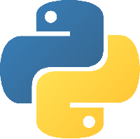 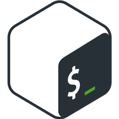 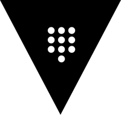 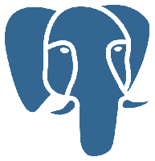 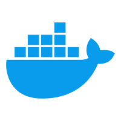  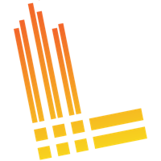 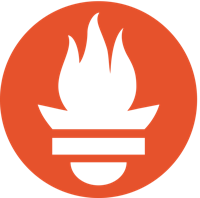
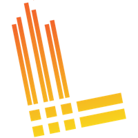 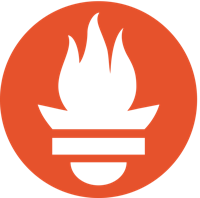  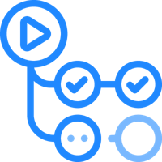
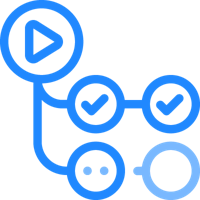
About me
Site Reliability Engineer with 5+ years of experience in IT industry. I really enjoy creating an application that solves problems I am struggling with, so every project I build has its purpose. I am passionate tech enthusiast and developer building, experimenting, and learning through hands-on home lab setups and cutting-edge technology projects.
Work Experience
Site Reliability Engineer NordSecurity
July 2025 - Present
I help build and maintain scalable internal systems that empower data analysts, engineers, and scientists. My focus is on automation, performance, observability, and reliability to support one of the world’s leading cybersecurity products.
Site Reliability Engineer Relativity
December 2023 - June 2025
I am responsible for RelativityOne (e-discovery product) availability monitoring, which is based on NewRelic Scripted Browser monitor running JavaScript Selenium test to verify whether core product functionalities are available for end users.
I specialize in designing, developing, and maintaining automated releases and deployment processes using custom-built GitHub Actions workflows. My role involves ensuring seamless and efficient deployment processes across all cloud-hosted tenants. I work with both Python and PowerShell scripts to programmatically perform operations needed to achieve the goal. As a result I have implemented Selenium test versioning and the ability to easily upgrade or rollback our availability test on production instances.
Operations Specialist 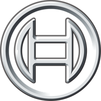 Bosch
August 2023 - November 2023
I am developing PowerShell automation scripts which are triggered on monitoring host via Windows Task Scheduler to cover repetitive daily tasks. Usually automation scripts are integrated with SPLUNK alerting system to process data generated by PowerShell and notify operations team about captured issues or coming manual duties.
Technical Engineer Atos
July 2021 - July 2023
I am designing and building automations for as many repetitive tasks as possible using PowerShell scripting. To be able to achieve the goal I have developed many PowerShell modules related to necessary data transformations, which are required in every report or dataset processed. I take care of code speed execution, as well as the optimization of my device resource consumption. Understanding of general concept of multithreading and multiprocessing accordingly with PowerShell available techniques allowed me to speed up operations done within the script and make a better use of computer resources. As a result I capable of delivering very complex reports everyday, on customer’s order, where combining data from different tools is required.
IT Network Administrator, Freelance
June 2019 - June 2021
I design, build and modernize complete IT infrastructure. I am responsible for both software and hardware in environments up to 50 users.
During my daily work I cover following areas:
- Network physical and logical topology design, configuration and management - Cisco hardware as well as virtualized solutions like pfSense routing software
- Active Directory domains design, configuration and management
- Storage and backup solutions design, configuration and management
- Virtualization solutions design, configuration and management mainly based on Microsoft Hyper-V
- Device monitoring and remote access design, configuration and management
Projects
HornaHomeLab - GitHub Organization
It’s Github organization dedicated mostly for Infrastructure as a Code and automations, that I’m running in my Lab environment.
- HomeLab Setup & Networking: Automating home networks, routers, firewalls, and servers.
- Virtualization & Containers: Building and managing virtual machines and container environments like Docker.
- On-Premise Infrastructure & Automation: Leveraging self hosted platforms and deploying infrastructure as code.
- DevOps & CI/CD Pipelines: Automating software development lifecycle with continuous integration and delivery.
- Observability & Monitoring: Developing custom Prometheus exporters, enhancing observability across infrastructures.
Github Statistics
GitHub Action based automation leveraging Python’s matplotlib library to generate Language statistics for GitHub user authenticated with provided token. Supports both Light and Dark Github themes, great for extending
Investment
The Investment project is a Python based, containerized tool designed to automate and streamline the management and analysis of investment portfolios. At its core, the project provides robust functionality for handling investment configurations and updating fund quotations, ensuring that financial data is consistently up-to-date and accurate. Users can quickly configure investments, retrieve and update quotations, and visualize the results on Grafana dashboards. One application instance can handle many investment owners with multiple investment wallets for each owner.
Education
Engineer’s degree, Information Technology - Software engineering
2021 - 2025
- 2024/2025 - Scholarship from the Rector of the Lodz University of Technology
- 2023/2024 - Scholarship from the Rector of the Lodz University of Technology
ICT Technician
Jan Szczepanik’s Technical School No. 10 in Lodz
2017 - 2021
- European Union scholarship “Professionals in the Lodz province” - scholarships for the most talented
Languages
- English: Fluent
- Polish: Native